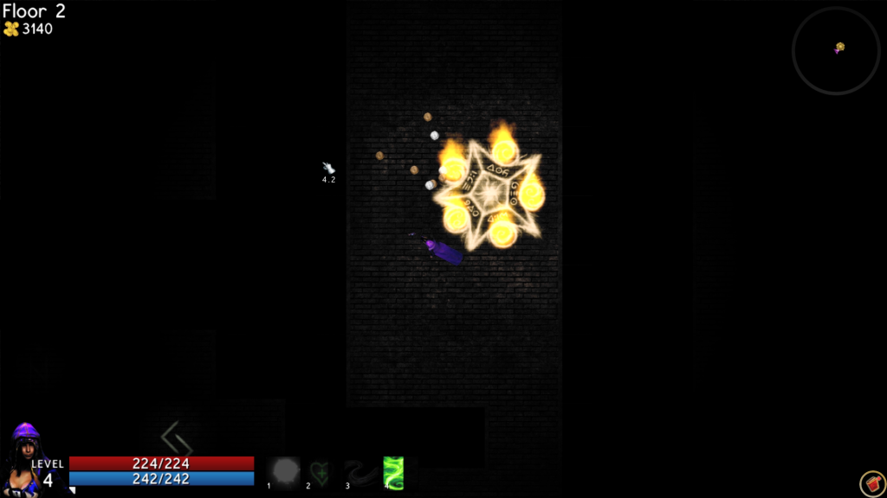

Trial by Spire
This project begin with our desire to experiment with new game engine technologies and also to create a cool game in the process.
Resulting was a dungeon crawler with procedurally generated content, post processing render effects, and a slew of other code-based and AI features.
Project partners: Leif Foged and Shannon Chen
Available for download here (will prompt you to install .Net4 if you don't have it):
Game Download
Source code available here:
Source
(C++) Disk Drive Simulator
This is a cool little project that simulates a computer disk drive, managing storage blocks and memory retrieval. Commands include:
system_status, halt, add_network_node, delete_network_node, create_file, ls, delete_files, print_files, transfer_file.
For anyone looking for a good delve into memory allocation and management, a project like this can be helpful!
Source code available here:
Source
(Java) Scheme/Lisp Interpreter
An interpreter I did a little ways back in Java for Scheme/Lisp code. Not a whole lot to look at, but can be quite useful.
Source code available here:
Source
Box Plox
Squish, or be squished.
Box Plox originated as a "game-engine-from-scratch" project for Northwestern's 3D Game Engine Design course, taught by
Ian Horswill. Seth Nelson and I decided to take our engine a little further and to continue work on the game. The engine
is implemented in Microsoft's XNA framework for C#. The game was a huge hit in our class's final game expo.
Players control small characters on a large grid of cubes. They try to push, dig, and throw boxes, in an attempt to squish
their opponents. Hilarity ensues.
Alpha gameplay footage can be seen here: